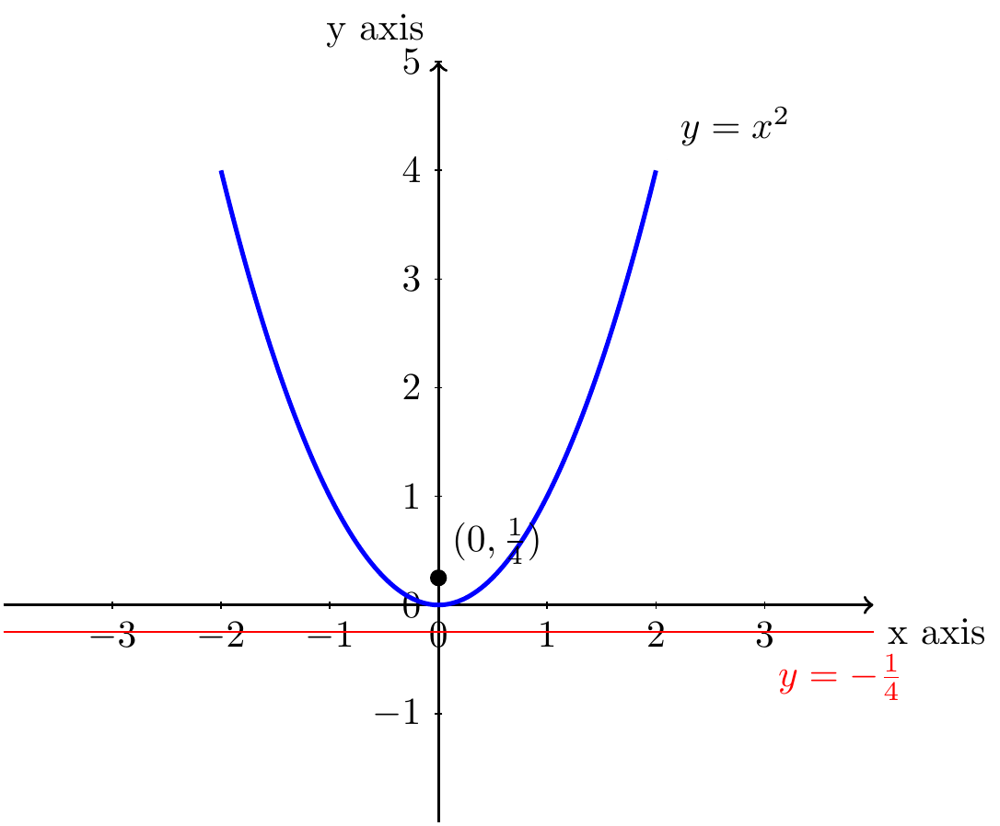
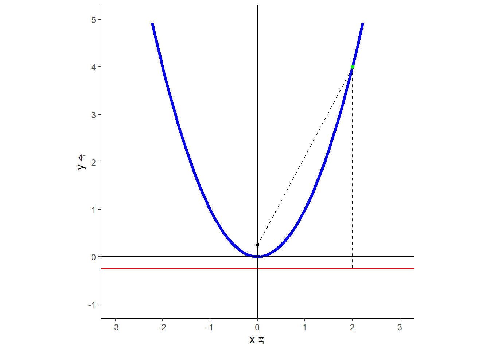

1 포물선(Parabola)
포물선(Parabola)은 이차식 함수의 그래프로 흔히 알려져 있다. 특정한 점(초점)과 특정한 선(준선)까지의 거리가 같은 모든 점들의 자취로 볼 수 있다. 즉, 점 \(F(0,a)\)와 선분 \(l\) 사이 동일한 거리를 갖는 점들을 모아 놓은 자취가 포물전이 된다.

\(y=x^2\)은 점\((0,\frac{1}{4})\) 와 직선 \(y = - \frac{1}{4}\) 사이 길이가 같은 점의 자취를 연결한 곡선이다.
\begin{tikzpicture}
%% coordinate
\draw[thick,->] (-4,0) -- (4,0) node[anchor=north west] {x axis};
\draw[thick,->] (0,-2) -- (0,5) node[anchor=south east] {y axis};
\foreach \x in {-3,-2,-1,0,1,2,3}
\draw (\x cm,1pt) -- (\x cm,-1pt) node[anchor=north] {$\x$};
\foreach \y in {-1,0,1,2,3,4,5}
\draw (1pt,\y cm) -- (-1pt,\y cm) node[anchor=east] {$\y$};
%% parabola
\draw [blue, very thick] (-2,4) parabola bend (0,0) (2,4);
\draw [red] (-4,-1/4) -- (4,-1/4);
\filldraw[black] (0, 1/4) circle (2pt) node[anchor=south west] {$(0, \frac{1}{4})$};
%% equation
\filldraw[black] (2.1, 4.1) circle (0pt) node[anchor=south west] {$y = x^2$};
\filldraw[red] (3, -1) circle (0pt) node[anchor=south west] {$y = - \frac{1}{4}$};
\end{tikzpicture}
\(y=x^2\) 그래프를 ggplot으로 시각화하면 다음과 같이 나타낼 수 있다.
library(tidyverse)
parabola_fn <- function(x) x^2
ggplot() +
geom_function(fun = parabola_fn, colour="blue", size = 1.5) +
geom_point(aes(x = 0, y = 1/4), size = 1.5) +
geom_hline(yintercept = -1/4, color = "red") +
theme_classic() +
coord_equal(ratio = 1) +
scale_x_continuous(limits = c(-3, 3), breaks = seq(-3, 3, 1)) +
scale_y_continuous(limits = c(-1, 5), breaks = seq(-1, 5, 1)) +
labs(x = "x 축",
y = "y 축") +
geom_hline(yintercept = 0) +
geom_vline(xintercept = 0) +
geom_segment(aes(x = 0, y = 1/4, xend = 2, yend =4), linetype = "dashed") +
geom_segment(aes(x = 2, y = 4, xend = 2, yend =-1/4), linetype = "dashed") +
geom_point(aes(x=2, y=4), size = 1.5, color = "green")
데이터 과학자 이광춘 저작
kwangchun.lee.7@gmail.com